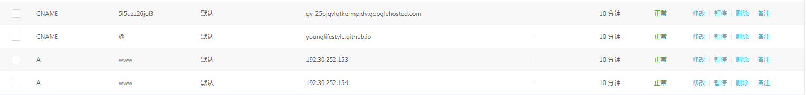
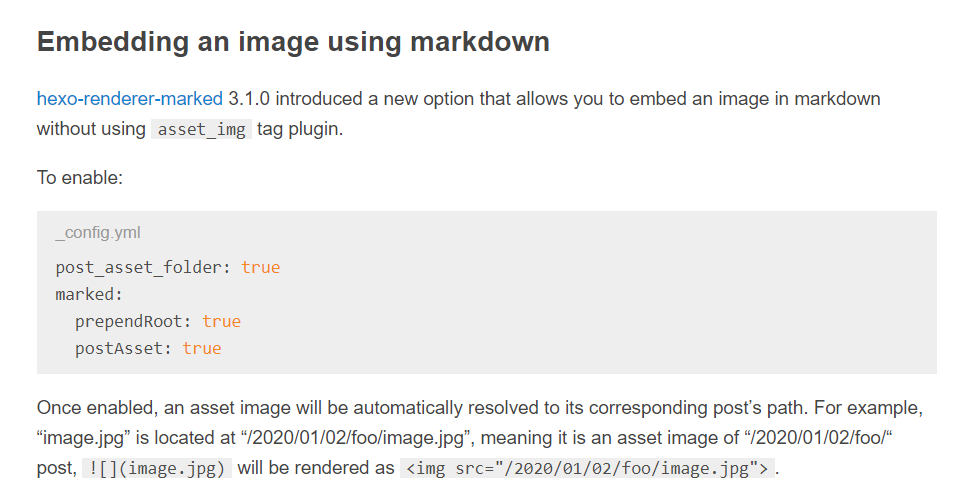
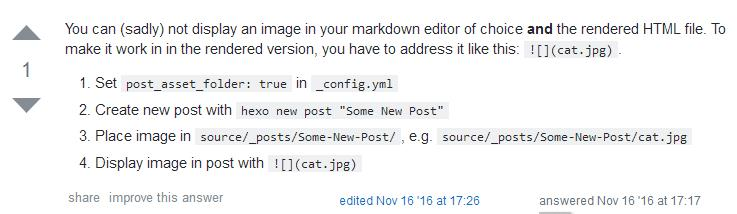

搭建博客——使用Hexo
搭建博客
使用GitHub和Hexo搭建博客其实是非常顺畅的，毕竟工具到现在都已经经历很多版本的迭代了，已经很傻瓜式了。
推荐搭建的教程：
关于Hexo6.0搭建个人博客(github+Google-收录篇)，博主还有教我们怎么收录百度的博客，道理是一样的。
https://www.imooc.com/article/31085
这里提一点绑定的事，附上我的DNS解析：

插入图片
遇到的问题
这里主要是提一下我遇到的一个插入图片的问题，这里我使用的Hexo主题是yilia。
1 | git clone https://github.com/litten/hexo-theme-yilia.git themes/yilia |
yilia需要会提示我们安装一个插件
1 | npm i hexo-generator-json-content --save |
但很奇怪的是，我在安装完这个插件后，我的hexo-asset-image——图片链接转换插件就不见了，导致我莫名其妙的图片无法显示了，Google多次无果，重新部署时才发现这个问题（没有细心去找），实在是没想到会出现这个问题，所以在装完这个插件后，又手动将hexo-asset-image插件给安装了回来，之后网页和本地都没有显示问题了，撒花。
1 | npm install https://github.com/CodeFalling/hexo-asset-image --save |
当然，我还看到有人遇到图片显示不出来的其他问题，如果和你的问题对上了，可以看看：
hexo中完美插入本地图片
http://etrd.org/2017/01/23/hexo中完美插入本地图片/
方便的做法：HERE。
2018年7月25日20:54:20
在这个时候又添加上这段话，是因为博客无法显示图片了，hexo-asset-image好像无法替我正常转换图片路径了，对JS的源码无法分析，只能提一个issue，同时在网上查找答案，在白天的时候找到一个方法，将其截图，准备晚上试试，发现这个方法好像确实好使。
注意：使用该方法则不能保留hexo-asset-image，直接去module目录删除即可。

原链接没有保存，故无法放出链接了，需要的可自行Google。
修改后可配合Typora使用，其在“编辑”——“图片工具”中，可设置图片根目录，将其定位到图片所在即可。
也就是使用Markdown插入图片的语法即可，当然，图片得放在相对路径上。
2020年11月23日
换了主题：Maupassant，非常好用，大道至简——Hexo简洁主题推荐。简单纯粹，一些具体的操作，可以看博主的issue，大概率都能找到解决方法。
若需要增加广告，这里有一篇：添加Google AdSense到Hexo博客。
参考的博客
Hexo添加categories页面，Hexo Yilia 添加目录页面
Hexo——Yilia主题添加文章置顶
1 | npm uninstall hexo-generator-index --save |
本文标题：搭建博客——使用Hexo
文章作者：小师
发布时间：2018-07-22
最后更新：2023-02-25
原始链接：chunlife.top/2018/07/22/搭建博客——使用Hexo/
版权声明：本站所有文章均采用知识共享署名4.0国际许可协议进行许可